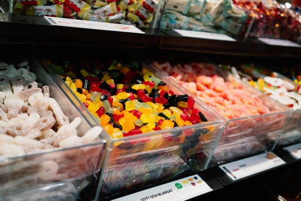

MUSEUM OF CANDY

Physically, candy is characterized by the use of a significant amount of sugar or sugar substitutes. Unlike a cake or loaf of bread that would be shared among many people, candies are usually made in smaller pieces. However, the definition of candy also depends upon how people treat the food. Unlike sweet pastries served for a dessert course at the end of a meal, candies are normally eaten casually, often with the fingers, as a snack between meals